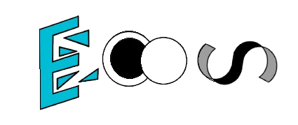
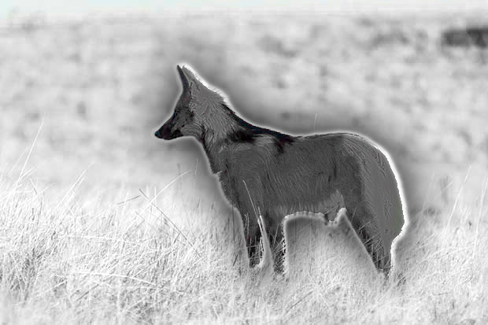

Kit de Imprensa & Comunicado Oficial
Informações detalhadas, ficha técnica, dados de pesquisa e recursos visuais para jornalistas, criadores de conteúdo e veículos de imprensa.


Informações detalhadas, ficha técnica, dados de pesquisa e recursos visuais para jornalistas, criadores de conteúdo e veículos de imprensa.
SÃO PAULO – 2026 — A LoneWolf Game Studio tem o orgulho de apresentar oficialmente ECOS: Sussurros de um despertar, um instigante jogo de aventura e exploração no formato Side-Scrolling. No jogo vocês assumirão o papel de um garoto chamado "Tato" e seu fiel companheiro canino "Lu", navegando por cenários misteriosos repletos de sombras, quebra-cabeças e segredos esquecidos. Entre em ambientes sombrios em busca de pistas de sobre o paradeiro de seu fiel companheiro e encontre com segredos e quebra-cabeças que os levarão por um caminho de crescimento e companheirismo. Astúcia não será sua única companheira neste jogo! Ouça o que os Ecos sussuram pelos corredores sombrios de um mundo distorcido, desvende as histórias, e veja o que está além das imagens! Sem dúvida um jogo para jogar com a mente aguçada e o coração aberto!
Inspirado nos grandes sucessos do cenário indie internacional como Limbo e Inside, ECOS combina mecânicas precisas de navegação lateral com uma narrativa emocionante focada em companheirismo, coragem e superação.
Caso queira deixar suas impressões, use o formulário pelo link de contato! O link se encontra no topo da página!
| Atributo | Detalhes do Projeto |
|---|---|
| Título Oficial | ECOS - Sussurros de um despertar |
| Desenvolvedora | LoneWolf Game Studio (Fundado em 2026) |
| Gênero | Aventura / Side-Scrolling / Quebra-cabeça |
| Plataforma Base | PC / Unity Engine |
| Estilo Visual | 2D / Assets 3D e PixelArt |
| Público-Alvo (Fase 4) | Jogadores casuais e entusiastas de jogos indie narrativos |